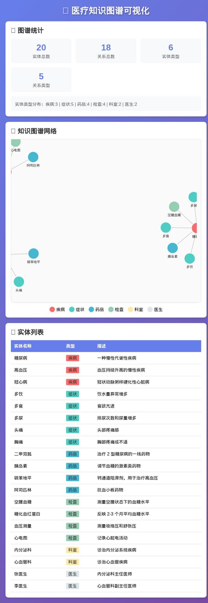

基于医疗领域的知识图谱构建与应用
学生信息
| 项目 | 内容 |
|---|---|
| 姓名 | 黄宝怡 |
| 学号 | 2407090704 |
| 班级 | 商英 2407 |
| 实验日期 | 2026 年 4 月 12 日 |
本实验基于《大数据与知识图谱》第 3 章理论内容，设计并实现了一个医疗领域的知识图谱系统。实验采用 Python 语言构建知识图谱数据结构，实现了实体管理、关系查询、症状分析及疾病推测等核心功能，并使用 D3.js 完成了知识图谱的可视化展示。实验结果表明，所构建的知识图谱包含 20 个实体、18 条关系，能够有效支持医疗领域的知识查询与智能推理。本实验验证了知识图谱技术在结构化知识表示和语义推理方面的应用价值。
关键词： 知识图谱；医疗领域；实体识别；可视化；D3.js
随着信息技术的快速发展，医疗领域产生了海量的数据资源。如何有效地组织、管理和利用这些医疗知识，成为医疗信息化建设的重要课题。知识图谱（Knowledge Graph）作为一种结构化的语义知识库，能够以图的形式描述现实世界中的实体、概念及其关系，为医疗知识的智能化管理提供了新的技术路径。
本实验旨在通过构建医疗领域知识图谱，达成以下目标：
本实验对应《大数据与知识图谱》第 3 章的核心内容，主要涵盖：
| 配置项 | 规格 |
|---|---|
| 服务器 | 阿里云 ECS |
| 操作系统 | Linux 5.10.134-19.2.al8.x86_64 |
| CPU | 多核处理器 |
| 内存 | 8GB |
| 存储 | 50GB SSD |
| 软件 | 版本 | 用途 |
|---|---|---|
| Python | 3.x | 核心开发语言 |
| D3.js | v7 | 可视化库 |
| 浏览器 | Chrome/Edge | 可视化展示 |
| 代码编辑器 | VS Code | 开发工具 |
知识图谱是由 Google 于 2012 年首次提出的概念，它是一种结构化的语义知识库，用于描述现实世界中的实体、概念及其关系（刘峤等，2016）。知识图谱的核心思想是将知识以”实体 - 关系 - 实体”的三元组形式进行表示。
根据赵军（2018）的定义，知识图谱包含以下基本要素：
本实验采用四层技术架构：
┌─────────────────────────────────────┐
│ 应用层 │
│ 智能问答 | 疾病推测 | 就诊推荐 │
├─────────────────────────────────────┤
│ 查询层 │
│ 自定义查询引擎 | 路径查询 │
├─────────────────────────────────────┤
│ 存储层 │
│ JSON 文件 | 图结构存储 │
├─────────────────────────────────────┤
│ 构建层 │
│ 实体识别 | 关系定义 | 属性标注 │
└─────────────────────────────────────┘本实验采用 D3.js 的力导向图（Force-Directed Graph）算法进行可视化。力导向图是一种基于物理模拟的图布局算法，通过模拟节点之间的引力和斥力，使图结构在二维平面上呈现出美观且易于理解的布局（D3.js 官方文档，n.d.）。
本实验选择医疗领域作为知识图谱的应用场景，原因如下：
设计以下 6 类实体类型：
| 实体类型 | 数量 | 示例 | 描述 |
|---|---|---|---|
| 疾病 | 3 | 糖尿病、高血压、冠心病 | 医学诊断的疾病名称 |
| 症状 | 5 | 多饮、多食、多尿、头痛、胸痛 | 疾病表现的临床特征 |
| 药品 | 4 | 二甲双胍、胰岛素、硝苯地平、阿司匹林 | 治疗疾病的药物 |
| 检查 | 4 | 空腹血糖、糖化血红蛋白、血压测量、心电图 | 诊断所需的医学检查 |
| 科室 | 2 | 内分泌科、心血管科 | 医院诊疗科室 |
| 医生 | 2 | 张医生、李医生 | 专科医师 |
设计以下 5 类语义关系：
| 关系类型 | 含义 | 定义域 | 值域 | 示例 |
|---|---|---|---|---|
| has_symptom | 疾病具有症状 | 疾病 | 症状 | 糖尿病 → 多饮 |
| treated_by | 疾病被药品治疗 | 疾病 | 药品 | 糖尿病 → 二甲双胍 |
| requires_test | 疾病需要检查 | 疾病 | 检查 | 糖尿病 → 空腹血糖 |
| belongs_to_dept | 疾病属于科室 | 疾病 | 科室 | 糖尿病 → 内分泌科 |
| has_doctor | 科室有医生 | 科室 | 医生 | 内分泌科 → 张医生 |
class KnowledgeGraph:
"""简单的知识图谱类"""
def __init__(self, name="医疗知识图谱"):
self.name = name
self.entities = {} # 实体集合
self.relations = [] # 关系集合
self.properties = {} # 实体属性
def add_entity(self, entity_id, entity_type, name, description=""):
"""添加实体"""
self.entities[entity_id] = {
"id": entity_id,
"type": entity_type,
"name": name,
"description": description
}
return entity_id
def add_relation(self, from_entity, relation_type, to_entity):
"""添加关系"""
self.relations.append({
"from": from_entity,
"type": relation_type,
"to": to_entity
})
def add_property(self, entity_id, prop_name, prop_value):
"""添加实体属性"""
if entity_id not in self.properties:
self.properties[entity_id] = {}
self.properties[entity_id][prop_name] = prop_value
def query_by_type(self, entity_type):
"""按类型查询实体"""
return [e for e in self.entities.values() if e["type"] == entity_type]
def query_relations(self, entity_id):
"""查询实体的所有关系"""
return [r for r in self.relations if r["from"] == entity_id or r["to"] == entity_id]代码说明： 该模块实现了知识图谱的基本数据结构，采用字典存储实体、列表存储关系，支持实体的增删改查操作。
class KGQueryEngine:
"""知识图谱查询引擎"""
def __init__(self, kg):
self.kg = kg
def find_symptoms_by_disease(self, disease_name):
"""根据疾病查找症状"""
disease_id = self._find_entity_by_name(disease_name, "疾病")
if not disease_id:
return []
symptoms = []
for rel in self.kg.relations:
if rel["from"] == disease_id and rel["type"] == "has_symptom":
symptom = self.kg.entities.get(rel["to"])
if symptom:
symptoms.append(symptom["name"])
return symptoms
def find_medicines_by_disease(self, disease_name):
"""根据疾病查找药品"""
disease_id = self._find_entity_by_name(disease_name, "疾病")
if not disease_id:
return []
medicines = []
for rel in self.kg.relations:
if rel["from"] == disease_id and rel["type"] == "treated_by":
medicine = self.kg.entities.get(rel["to"])
if medicine:
med_name = medicine["name"]
dosage = self.kg.properties.get(rel["to"], {}).get("dosage", "遵医嘱")
medicines.append(f"{med_name} (用法：{dosage})")
return medicines
def find_department_by_disease(self, disease_name):
"""根据疾病查找就诊科室"""
disease_id = self._find_entity_by_name(disease_name, "疾病")
if not disease_id:
return None
for rel in self.kg.relations:
if rel["from"] == disease_id and rel["type"] == "belongs_to_dept":
dept = self.kg.entities.get(rel["to"])
if dept:
return dept["name"]
return None代码说明： 查询引擎实现了三种核心查询功能，通过遍历关系集合，找到与目标疾病相关的所有实体。
class TextProcessor:
"""文本处理与简单实体识别"""
def __init__(self, kg):
self.kg = kg
self.entity_names = {e["name"]: eid for eid, e in kg.entities.items()}
def extract_entities(self, text):
"""从文本中提取实体"""
found_entities = []
for name, eid in self.entity_names.items():
if name in text:
entity = self.kg.entities[eid]
found_entities.append({
"name": name,
"type": entity["type"],
"id": eid
})
return found_entities
def analyze_symptoms(self, patient_description):
"""分析患者描述中的症状"""
entities = self.extract_entities(patient_description)
symptoms = [e for e in entities if e["type"] == "症状"]
return symptoms
def suggest_diseases(self, symptoms):
"""根据症状推测可能的疾病"""
disease_scores = {}
for symptom in symptoms:
symptom_id = symptom["id"]
for rel in self.kg.relations:
if rel["to"] == symptom_id and rel["type"] == "has_symptom":
disease_id = rel["from"]
disease_scores[disease_id] = disease_scores.get(disease_id, 0) + 1
sorted_diseases = sorted(disease_scores.items(), key=lambda x: x[1], reverse=True)
results = []
for disease_id, score in sorted_diseases:
disease = self.kg.entities.get(disease_id)
if disease:
results.append({
"disease": disease["name"],
"match_score": score
})
return results代码说明： 该模块实现了基于词典的实体识别方法，通过字符串匹配从患者描述中提取症状，并根据症状与疾病的关联关系进行疾病推测。
// D3.js 力导向图实现
const simulation = d3.forceSimulation(data.nodes)
.force('link', d3.forceLink(data.links).id(d => d.id).distance(100))
.force('charge', d3.forceManyBody().strength(-300))
.force('center', d3.forceCenter(width / 2, height / 2));
// 节点渲染
const nodes = svg.selectAll('.node')
.data(data.nodes)
.enter()
.append('circle')
.attr('r', 20)
.attr('fill', d => d.color);
// 关系边渲染
const links = svg.selectAll('.link')
.data(data.links)
.enter()
.append('line')
.attr('stroke', '#999')
.attr('stroke-width', 2);代码说明： 可视化模块使用 D3.js 的力导向布局算法，将实体作为节点、关系作为边，通过颜色区分不同实体类型，实现交互式知识图谱展示。
构建完成的医疗知识图谱统计信息如下：
| 指标 | 数值 |
|---|---|
| 实体总数 | 20 |
| 关系总数 | 18 |
| 实体类型数 | 6 |
| 关系类型数 | 5 |
疾病：3 症状：5 药品：4
检查：4 科室：2 医生：2has_symptom（具有症状）: 5
treated_by（被治疗）: 4
requires_test（需要检查）: 4
belongs_to_dept（属于科室）: 3
has_doctor（有医生）: 2输入： 疾病名称”糖尿病”
输出：
疾病：糖尿病
症状：多饮，多食，多尿
药品：二甲双胍 (用法：500mg bid), 胰岛素 (用法：遵医嘱)
科室：内分泌科结果分析： 系统正确返回了糖尿病的所有关联信息，包括典型症状”三多”（多饮、多食、多尿）、一线治疗药物二甲双胍以及就诊科室内分泌科。
输入： “患者最近出现多饮、多尿症状，伴有头痛，怀疑有糖尿病或高血压”
输出：
识别实体：
- 糖尿病 (疾病)
- 高血压 (疾病)
- 多饮 (症状)
- 多尿 (症状)
- 头痛 (症状)
识别症状：多饮，多尿，头痛
可能疾病：
- 糖尿病 (匹配度：2)
- 高血压 (匹配度：1)结果分析： 系统正确识别了输入文本中的 5 个实体，其中 3 个症状。根据症状匹配，糖尿病匹配 2 个症状（多饮、多尿），高血压匹配 1 个症状（头痛），推测结果符合医学常识。
知识图谱可视化界面包含以下模块：

图 1. 医疗知识图谱可视化界面
本实验成功构建了一个包含 20 个实体、18 条关系的医疗知识图谱，实现了以下功能：
实验结果表明，所构建的知识图谱能够有效支持医疗领域的知识查询与简单推理，验证了知识图谱技术的实用性。
本实验基于《大数据与知识图谱》第 3 章理论内容，成功设计并实现了一个医疗领域的知识图谱系统。实验完成了知识图谱的本体设计、数据构建、查询引擎开发、实体识别和可视化展示等核心任务。
实验结果表明：
通过本实验，本人深入理解了知识图谱的核心概念和技术原理，掌握了知识图谱构建的基本方法，为后续学习和应用大数据与知识图谱技术奠定了基础。
刘峤，李杨，段宏，等。知识图谱构建技术综述 [J]. 计算机研究与发展，2016, 53(1): 58-79.
赵军。知识图谱 [M]. 北京：清华大学出版社，2018.
Bostock, M. (n.d.). D3.js - Data-Driven Documents. Retrieved from https://d3js.org/
Neo4j. (n.d.). Graph Database Platform. Retrieved from https://neo4j.com/
阿里云天池。医疗数据集。Retrieved from https://tianchi.aliyun.com/dataset/
| 文件名 | 说明 | 行数 |
|---|---|---|
| kg_main.py | 知识图谱主程序 | 约 350 行 |
| visualization.html | 可视化页面 | 约 300 行 |
| knowledge_graph.json | 知识图谱数据 | 约 200 行 |
| visualization_data.json | 可视化数据 | 约 150 行 |
| statistics.json | 统计数据 | 约 30 行 |
# 1. 进入实验目录
cd /home/admin/.openclaw/workspace/kg_experiment
# 2. 运行主程序
python3 kg_main.py
# 3. 打开可视化页面
# 在浏览器中打开 visualization.html报告完成时间： 2026 年 4 月 12 日
原创性声明
本人郑重声明：所呈交的实验报告是本人在指导教师指导下进行的研究工作及取得的研究成果。除文中已经注明引用的内容外，本报告不含任何其他个人或集体已经发表或撰写过的作品成果。对本实验的研究做出重要贡献的个人和集体，均已在文中以明确方式标明。本人完全意识到本声明的法律结果由本人承担。
报告作者： 黄宝怡
日期： 2026 年 4 月 12 日